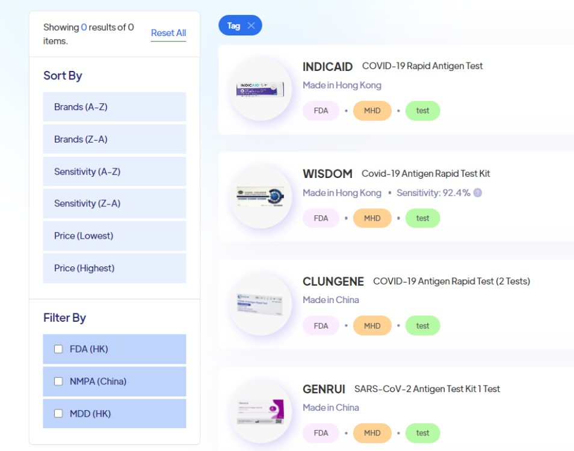
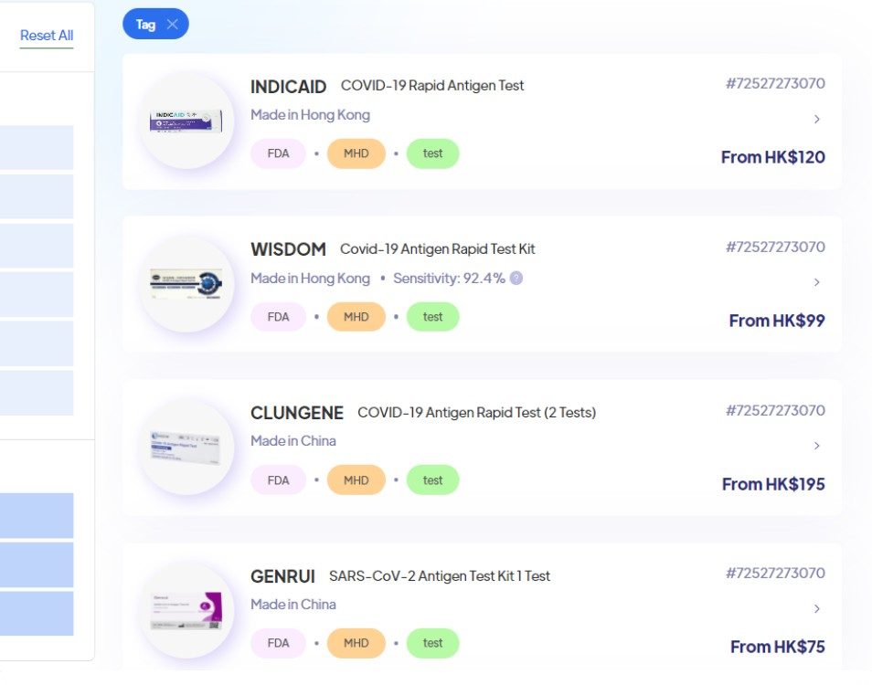
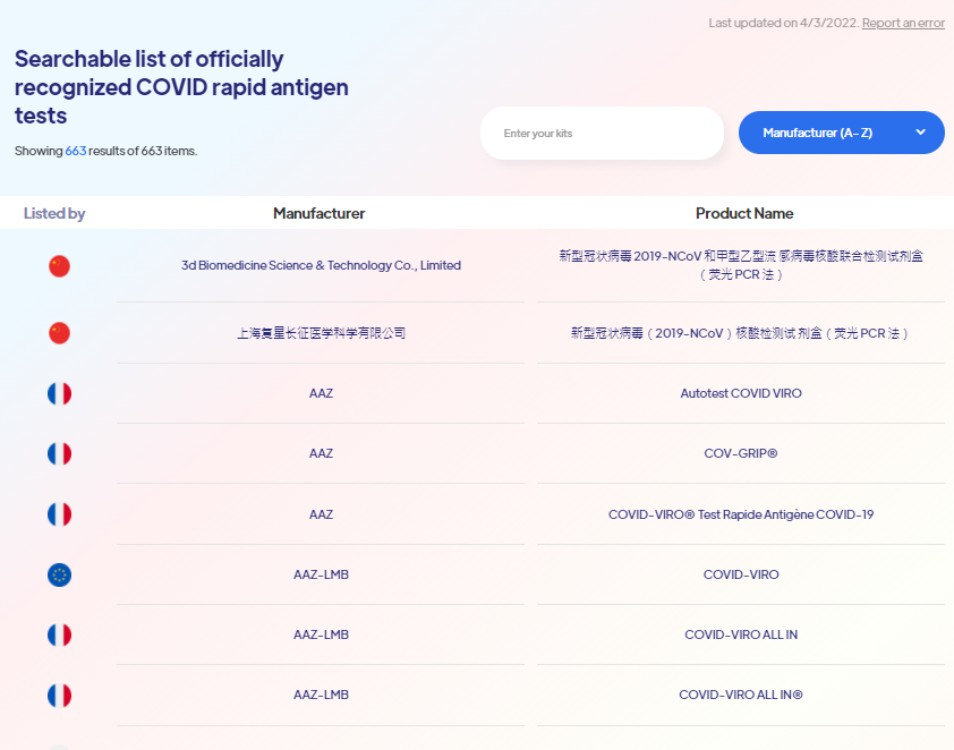
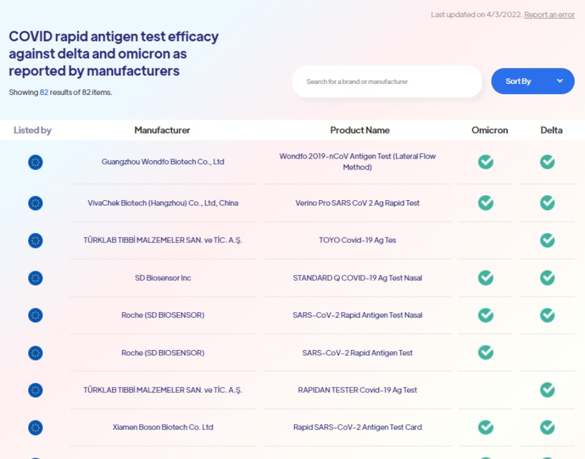

新型冠狀病毒快速抗原測試資料庫
下列四款免費資料搜尋工具：



當您想查看經全球最值得信賴的權威機構核准的快速抗原測試列表
許多政府機構，包括中國國家藥品監督管理局（NMPA）、歐盟衛生安全委員會（HSC）、美國食品藥物管理局（FDA）等，對獲認可的快速抗原測試試劑，都有仔細的採購清單。

當您想查核快速測試劑檢測Delta或Omicron變種的效用
如果您擔心新型冠狀病毒自我快速測試套裝能否可靠地檢測Delta或Omicron變種病毒，此工具可以為您提供幫助。